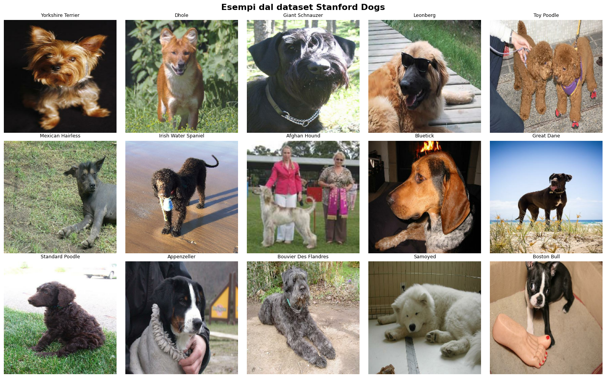
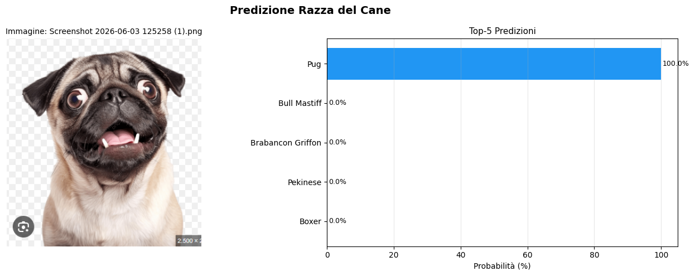

Area scientifico-tecnica
Intelligenza Artificiale
Intelligenza Artificiale è stata una delle materie che mi ha coinvolta maggiormente durante il quinto anno. Mi ha permesso di avvicinarmi a tecnologie sempre più presenti nella vita quotidiana e di comprenderne il funzionamento attraverso attività pratiche e progetti concreti.
A differenza di altre materie, ciò che ho apprezzato di più è stata proprio la componente laboratoriale. Ho trovato molto stimolante lavorare direttamente sui modelli di Machine Learning e Deep Learning, sperimentando con dataset reali e osservando come le macchine possano apprendere dai dati.
Tra i progetti realizzati durante l'anno, quello che mi è rimasto maggiormente impresso riguarda il Deep Learning: insieme al mio gruppo abbiamo sviluppato un sistema in grado di riconoscere la razza di un cane a partire da una fotografia. Utilizzando una rete neurale addestrata su un dataset di immagini, il modello era in grado di analizzare la foto caricata dall'utente e identificare la razza con una determinata probabilità. Questo progetto mi ha permesso di comprendere concretamente il funzionamento delle reti neurali e delle tecniche di classificazione delle immagini.
Mi è piaciuto particolarmente vedere come concetti apparentemente complessi possano trasformarsi in applicazioni reali e utili. Lavorare su questi progetti mi ha fatto capire quanto l'Intelligenza Artificiale sia un settore in continua evoluzione e quanto la sperimentazione pratica sia fondamentale per comprenderne davvero le potenzialità.

